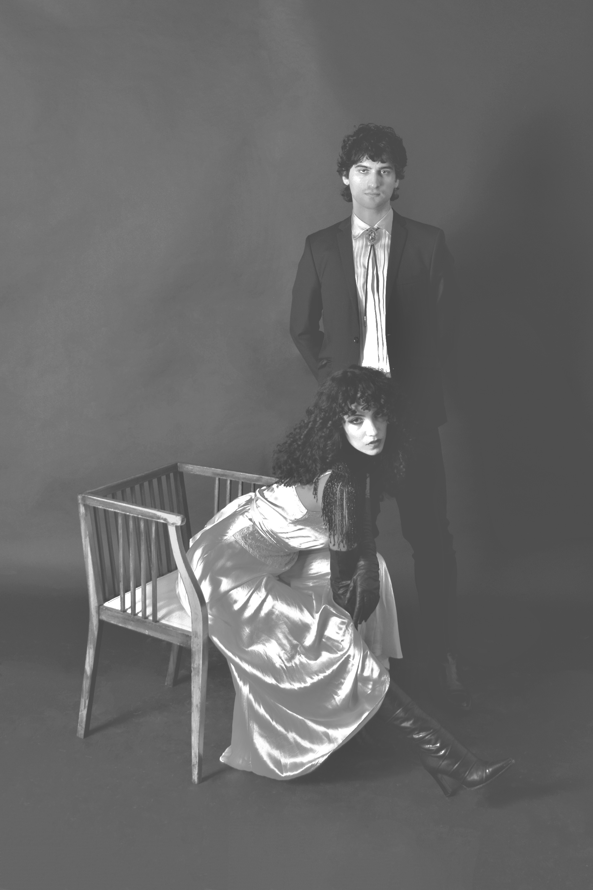

Toronto-based band Strip Lacquer are an act who are comfortable existing in unease.
Drawing from art rock experimentation, industrial abrasiveness, and post-punk ethos – Strip Lacquer is an outfit that encompasses sharp emotional songwriting with nuanced dissonance and a diverse sonic palette. Jagged noisy guitar contorts and pierces through glossy synth melodies while cavernous bass envelops feverish drum sections. Rich vocals soak the songs in sickly sweet lyrics reckoning with obsession, despair and disgust.
Vocalist Robin and guitarist Paul met working together at a record store. Bonding over literature, Czech new wave film, 50’s fetish illustration and surrealist photography, the two began a romantic relationship and soon after, started a band.
Their musical influences include The Birthday Party, Fad Gadget, Malaria!, Chris and Cosey, and Broadcast.
Strip Lacquer is laced in a delicate yet murky disposition, shifting seamlessly from amoral to vulnerable, fixated by a desire to dissect the grotesque.

.png)